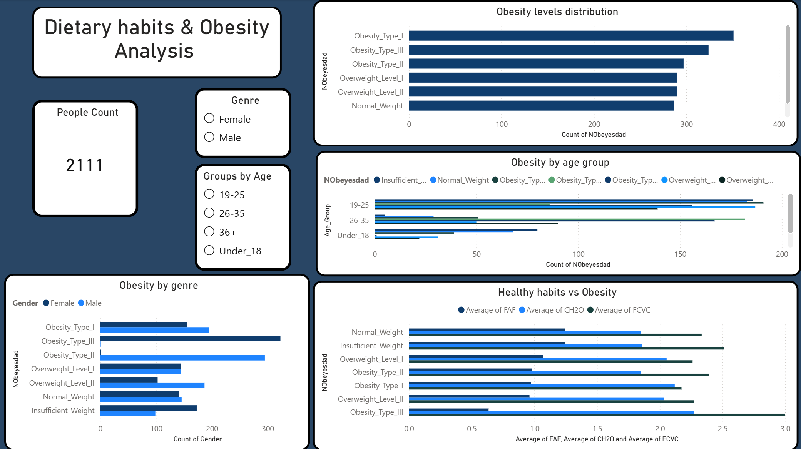

Project 01 · Data Analysis · Excel · Power BI
Obesity & Dietary Habits
Analysis
Analyzed a dataset of 2,111 records from Mexico, Peru, and Colombia to explore the relationship between dietary habits, physical activity, age, and obesity levels. Full analyst workflow from raw data to interactive dashboard and structured report.
Power BI Dashboard

Project Files
Key Findings
Finding 01
Physical Activity & Obesity Level
Obesity_Type_III shows the lowest physical activity average across the entire sample.
A clear inverse relationship exists — the more active a person is, the closer they
tend to be to a healthy weight.
Finding 02
Gender Distribution Across Obesity Types
Obesity_Type_III is almost entirely female while Obesity_Type_II is nearly 100% male.
These differences are too large to be explained by biology alone — likely a bias
introduced by the SMOTE data generation process.
Finding 03
Obesity by Age Group
The 36+ group shows proportionally more obesity despite being the smallest segment.
Contributing factors include reduced physical activity, less balanced dietary patterns,
and decreased basal metabolic rate — a well-documented physiological change with age.
Analyst Workflow
Data Acquisition
Downloaded dataset from UCI Machine Learning Repository — 2,111 records, 17 variables, CC BY 4.0 license.
Exploration & Documentation
Identified synthetic data (77% SMOTE-generated), documented variable scales, detected ordinal columns with artificial decimals.
Data Cleaning in Excel
Rounded ordinal scales (FCVC, NCP, CH2O, FAF, TUE), calculated BMI column, created Age_Group segmentation with nested IF logic.
Analysis & Visualization
Built pivot tables in Excel, then created interactive Power BI dashboard with cross-filtering slicers by gender and age group.
Findings Report
Documented 3 key findings, limitations, and conclusions in a structured PDF report with clinical context from nutrition domain knowledge.